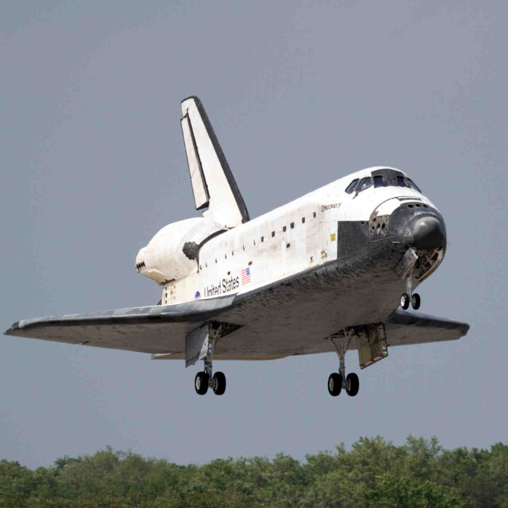

Source: NASA.
Discovery
Discovery
Discovery was part of NASA's Space Shuttle program which aimed to allow get humans into low Earth orbit (LEO) at a lower cost than traditional rockets, and also allowing the reuse of the space shuttle itself.
Discovery was the most used space shuttle out of the 5 that were manufactured. It was in service for 39 missions over a span of . Clocking up almost in space, this shuttle was fundamental to the construction of the ISS (International Space Station) and the launch of the Hubble Space Telescope.[1]
Achievements
Hubble Space Telescope
The Discovery space shuttle was the shuttle that brought the Hubble Space Telescope into space. Click here to see an image taken by the telescope.
ISS
Construction of the International Space Station was, in part, executed by crews aboard the Discovery shuttle.
365 days
Discovery spent a total of in Space! [2]
Retirement
Discovery was the first space shuttle to be retired from NASA's fleet - not surprising considering it was the most used shuttle! [2]
Miles travelled
Discovery travelled a total of 148,221,675 miles - the longest any space shuttle has travelled ever! [2]
Return to Flight missions
Discovery was the first shuttle to fly again following the tradegies of Challenger space shuttle explosion, and the loss of the Colombia space shuttle.
What happened?
The Space Shuttle progam was deemed too expensive to keep going. It's original goal was to reduce the cost of space access by using resuable parts, when in actual fact it was more expensive. A study in found that getting 1kg of cargo to the International Space Station was 3 times more expensive on the Space Shuttle program than it is with the cost of SpaceX's Dragon. [3]
References
- Wall, M. 10 Cool Facts About NASA's Space Shuttle Discovery. [Online]. 2012. [Accessed 1 March 2022]. Available from: https://www.space.com/15327-space-shuttle-discovery-10-cool-facts.html
- National Aeronautics and Space Administration. Space Shuttle Era Facts. [Online]. 2012. [Accessed 1 March 2022]. Available from: https://www.nasa.gov/pdf/566250main_SHUTTLE%20ERA%20FACTS_040412.pdf
- Foust, J. Review: The Space Shuttle Program: Technologies and Accomplishments. [Online]. 2017. [Accessed 2 March 2022]. Available from: https://www.thespacereview.com/article/3372/1